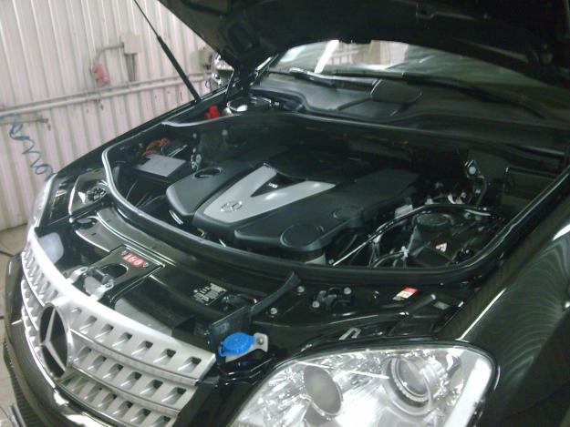

Крышки и кожухи
Очищаем доступные пластиковые и декоративные элементы с учётом их материала.
Подкапотное пространство постепенно покрывается пылью, дорожными загрязнениями и следами эксплуатации. Химчистка двигателя помогает привести в порядок доступные поверхности с использованием специальных средств.

Подкапотное пространство постепенно покрывается пылью, дорожными загрязнениями и следами эксплуатации. Химчистка двигателя помогает привести в порядок доступные поверхности с использованием специальных средств.
Способ очистки выбирается с учётом конструкции автомобиля, расположения электрических компонентов и характера загрязнений. Перед работой оцениваем подкапотное пространство и определяем безопасный объём обработки.
Стоимость — 1 500 ₽. Стоимость химчистки двигателя по каталогу BARIBAL — 1 500 ₽. Перед процедурой уточняем состояние и особенности подкапотного пространства, чтобы подтвердить возможность выполнения согласованного объёма.
Подкапотное пространство постепенно покрывается пылью, дорожными загрязнениями и следами эксплуатации. Химчистка двигателя помогает привести в порядок доступные поверхности с использованием специальных средств.
Способ очистки выбирается с учётом конструкции автомобиля, расположения электрических компонентов и характера загрязнений. Перед работой оцениваем подкапотное пространство и определяем безопасный объём обработки.
Оцениваем загрязнения, доступность и особенности расположения узлов.
Учитываем материалы, конструкцию и чувствительные элементы.
Очищаем согласованные поверхности специальными средствами.
Объём очистки определяется по состоянию подкапотного пространства и доступности конкретных элементов.
Очищаем доступные пластиковые и декоративные элементы с учётом их материала.
Подбираем способ очистки для участков, на которых есть обычные эксплуатационные загрязнения.
Уделяем внимание доступным поверхностям и участкам вокруг основных узлов.
Оцениваем доступ и не выполняем обработку там, где невозможно обеспечить безопасный подход.
Подкапотное пространство объединяет металл, пластик, резину, электрические соединения и другие элементы. Поэтому универсальная мойка без оценки может быть неподходящей. Используем специальные средства и выбираем способ обработки с учётом особенностей автомобиля.
Химчистка двигателя — индивидуальный подход с учётом состояния автомобиля и особенностей материалов.
Подберём объём работ после уточнения задачи и осмотра автомобиля.
Подкапотное пространство давно не очищалось и требует ухода.
Аккуратный вид доступных поверхностей может стать частью общей предпродажной подготовки.
Можно оценить загрязнения и привести в порядок подходящие для обработки зоны.
Очистку двигателя можно обсудить вместе с другими услугами по уходу за автомобилем.
Для владельцев, которым важно поддерживать чистоту не только кузова и салона.
Можно согласовать процедуру после осмотра и оценки состояния подкапотного пространства.
Последовательность и объём зависят от состояния автомобиля и согласованной задачи.
Оцениваем загрязнения, конструкцию и доступность поверхностей.
Учитываем электрические и электронные компоненты, разъёмы и другие чувствительные элементы.
Выбираем подходящие составы и способ очистки.
При необходимости защищаем чувствительные зоны и подготавливаем рабочее пространство.
Обрабатываем согласованные поверхности с учётом конструкции автомобиля.
Осматриваем результат и даём рекомендации по эксплуатации после процедуры.
Очистка подкапотного пространства требует осторожности. Мы не рассматриваем её как бесконтрольную мойку двигателя под высоким давлением. Возможность обработки отдельных зон зависит от состояния автомобиля, герметичности компонентов и доступа к ним. При наличии неисправностей или повреждённой проводки сначала требуется диагностика.
До начала работ мы осматриваем автомобиль, обсуждаем ожидаемый результат и согласуем все этапы. Если выбранный способ не подходит для конкретной поверхности или состояния, предложим обсудить другой вариант.
1 500 ₽
Стоимость химчистки двигателя по каталогу BARIBAL — 1 500 ₽. Перед процедурой уточняем состояние и особенности подкапотного пространства, чтобы подтвердить возможность выполнения согласованного объёма.
Можно начать с консультации и фотографий автомобиля.
Очистка доступных поверхностей подкапотного пространства специальными средствами с учётом конструкции автомобиля.
Способ очистки выбирается после осмотра. Мы не применяем бесконтрольную мойку под высоким давлением и учитываем чувствительные компоненты.
Безопасность зависит от состояния автомобиля и способа обработки. Перед работой оцениваем расположение и состояние чувствительных элементов.
Сначала нужно определить характер и источник загрязнения. Химчистка не устраняет утечки и не заменяет ремонт.
В каталоге BARIBAL указана стоимость 1 500 ₽. Возможность и состав работ подтверждаем после уточнения автомобиля.
Специальная подготовка со стороны владельца обычно не требуется, но важно сообщить о неисправностях и недавних работах под капотом.
Да, очистку подкапотного пространства можно обсудить как часть согласованного комплекса.
Такого результата нельзя гарантировать: он зависит от возраста, состояния и характера загрязнений. Цель — аккуратная очистка доступных поверхностей.
Расскажите о машине и задаче. Поможем определить подходящий объём работ и согласуем стоимость до начала.